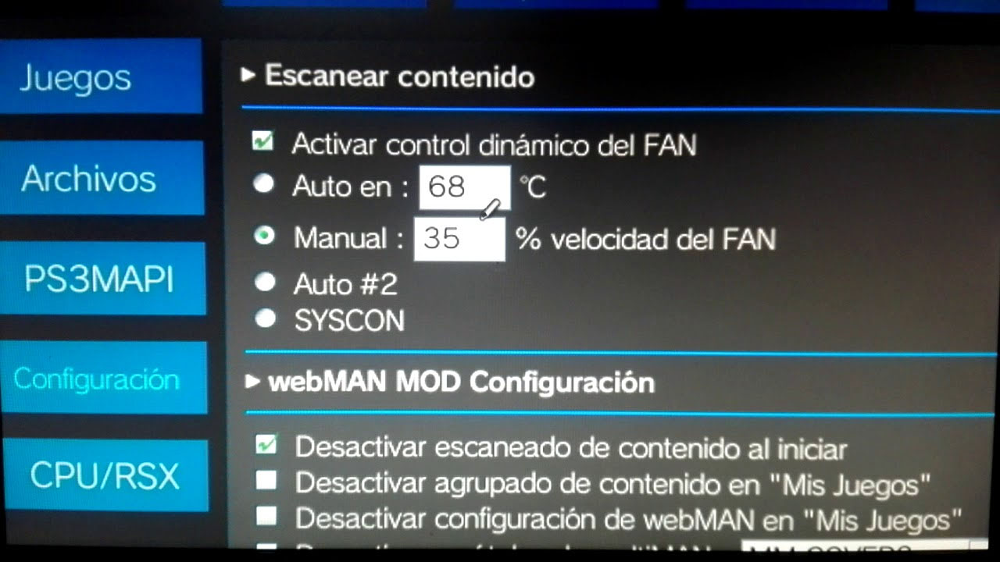
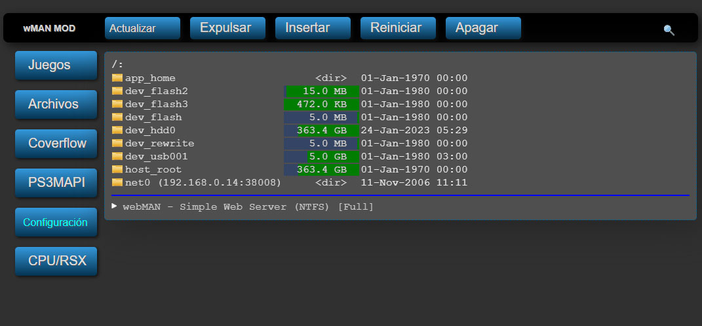

PS3 webMAN MOD
Es un manager plugin sprx compatible con CEX/DEX y HEN, es el mejor compañero para todos los Custom Firmware COBRA así como con HEN. Si quieres lanzar cómodamente tus juegos desde el XMB.
Para esta Guia
Requisitos para este tutorial
- USB en formato FAT32
Programas para este Tutorial
- PKG webMAN MOD
- Web oficial Github
Para Empezar este Tutorial
- Descargamos los archivos y lo pasamos a nuestra USB en la raíz
- Para instalar el .pkg nos vamos a Administrar archivos PKG
- Seleccionamos Instalar archivos PKG/Directorio estándar (USB)
- Y instalamos el pkg de nuestra aplicación
- webMAN_MOD_1.47.?? _Installer.pkg con la última versión disponible
- Una vez instalada nos saldrá en el menú de Juegos
- Si es la primara vez que instalan webMAN MOD en su consola
- Buscamos en Juegos el instalador webMAN MOD 1.47.??.
- Para instalar la versión completa le damos a
 más
más  y lo mantenemos presionado hasta que nos muestra algo en la pantalla
y lo mantenemos presionado hasta que nos muestra algo en la pantalla - Soltamos los botones y esperamos que termine la instalación
- Una vez terminada nuestra consola se reiniciará automáticamente
- Y listo
- Nos quedaría eliminar el instalador webMAN MOD 1.47.?? …. Para esto lo buscamos en Juegos le damos a
 y eliminar
y eliminar - Para los que tengan instalado el webMAN MOD y quieran actualizarlo
- Buscamos en el menú de Juegos la carpeta de Juegos de webMAN
- Una vez dentro nos vamos a la primera opción Configuración de webMAN
- Y después buscamos Actualizar webMAN MOD e Instalar
- Una vez instalada la nueva versión le damos a reiniciar nuestra consola (la apagamos y la encendimos de nuevo)
- Y estaría listo
- Al activar el HEN en nuestra consola
- Nos mostrara la carpeta de Juegos de webMAN en Juegos
- Si notamos que nuestro ventilador este acelerado podemos dejarlo por defecto o cambiar
- Para esto damos a Configuración de webMAN e le damos a PS3 webMAN [Configuración]
- Una vez abierto vamos a Escanear contenido 
- Si lo queremos dejar en automático (por defecto de la consola)
- Le damos a SYSCON
- Y lo dejamos por defecto de la consola (de fabrica)
- Si lo queremos dejar en manual lo dejamos entre
- Manual: 50% o 60% velocidad de FAN
- Mas queda solo hay que ir probando mientras más frio más velocidad del ventilador
- Una vez terminada la configuración del ventilador
- Le damos a Guardar mas abajo
- Y nos pedirá reiniciar la consola
- Si nuestra consola funciona no baja la temperatura por mas que le cambiemos las configuraciones
- Nos toca hacer mantención
- Para esto debemos cambiar la pasta térmica
- Y limpiar la consola y volver a revisar las configuraciones
- Para cargar nuestros juegos desde el HDD interno o externo
- Nos vamos a Juegos de webMAN/Configuracion de webMAN y seleccionamos
- Actualizar juegos de webMAN y el XMB: El XMB se volverá a cargar tras actualizar la lista de juegos
- Actualizar Juegos de webMAN: La lista de juegos se mostrará la próxima vez que cargue el XMB
- Actualizar lista web de juegos: La lista de juegos en formato HTML se actualizará para el modo web
- Por recordación le damos a Actualizar juegos de webMAN y el XMB y esperamos que cargue la lista de los juegos (si no aparecen puede utilizar otra opción)
- Para cargar un juego solo seleccionamos el juego le damos a equis y se montara en el XMB de Juegos
- Y para desmontarlo y colocar otro juego solo le damos a Juegos de webMAN/Configuracion de webMAN y buscamos Desmontar disco
- El termómetro de webMAN
- Para utilizar esta función de la webMAN
- Para empezar, debemos saber la ip de nuestra consola
- Nos vamos a Ajustes/Ajustes de red y le damos a Ajustes y lista de estado de conexión
- Y en Dirección IP la anotamos ej 192.168.1.36 (esta ip cambia a si que hay que estar pendiente por si nuestros modem cambian la IP)
- Una vez sepamos cual es la ip de nuestra consola
- Nos vamos a un navegar de Celular o Computador (no usar el navegador de la consola
- Y colocamos la siguiente url http://192.168.1.16/tempc.html donde están los numero colocamos la ip de la consola que buscamos anteriormente
- Los colores de referencia
- Con esto podremos saber si nuestra consola se encuentra en peligro y poder monitorearla desde nuestros dispositivos
- Podemos configurar nuestro webMAN desde el PC 
- Para empezar, debemos saber la ip de nuestra consola
- Nos vamos a Ajustes/Ajustes de red y le damos a Ajustes y lista de estado de conexión
- Y en Dirección IP la anotamos ej 192.168.1.36 (esta ip cambia a si que hay que estar pendiente por si nuestros modem cambian la IP)
- Una vez sepamos cual es la ip de nuestra consola
- Abrimos el navegador de nuestro equipo
- Con esto podemos ver y configurar muchas cosas de nuestra consola sin la necesidad de tener la consola
- Esta función más quenada es para facilitar más las configuraciones
- Y estaríamos listo
| Color | Temp C° | Description | |
|---|---|---|---|
| Azul | 30c – 50c | nuestra consola está muy fría | |
| Verde | 50c – 70c | nuestra consola está dentro de lo normales | |
| Amarillo | 70c – 75c | nuestra consola estaría en precaución (podría requerir una mantención) | |
| Naranjo | 75c – 80c | nuestra consola estaría en riesgo (requieren mantención) | |
| Rojo | 80c – 100c | nuestra consola estaría en peligro | |
×